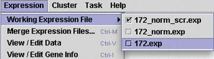

Working Expression File

This option allows you to choose from a range of expression files within a single project. As you can see from the image on the left, you can choose which one is active simply by clicking on it.